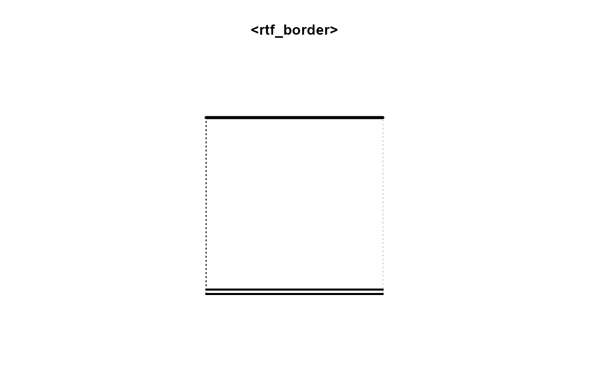
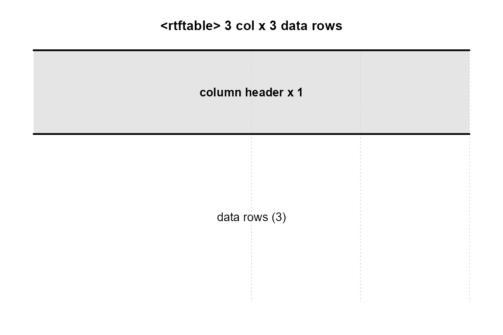
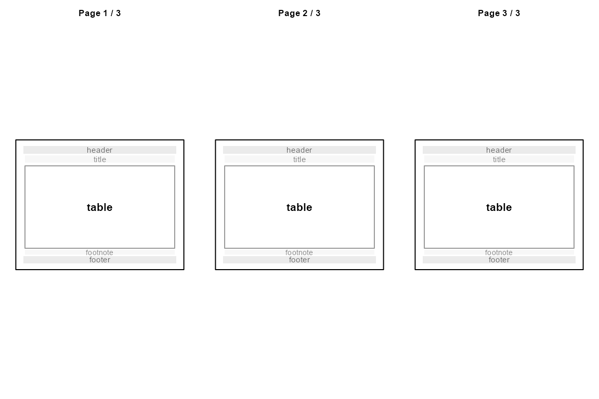

rtfreporter is designed to be a small but realistic case
study in how to pick between R’s two main object systems,
S3 and R6, inside a single package.
This vignette walks through the choices using the package’s own code as
the example, and shows how to see the difference in behaviour
rather than just argue about it on paper.
TL;DR — the rule
Default to S3. Reach for R6 only when reference semantics genuinely change what the API can do.
rtfreporter follows that rule:
| Class | System | Why |
|---|---|---|
rtf_border_side, rtf_border,
rtf_table_border
|
S3 | Value objects. Copy-on-modify is the right semantics. |
rtf_table_style |
S3 | Snapshot template; works fine without references. |
rtftable, rtfplot, rtfreport,
rtf_document
|
S3 | Data records; round-trip through saveRDS(). |
rtf_theme |
R6 (optional) | Shared mutable defaults. This is the one case S3 cannot match cleanly. |
Everything else — borders, the snapshot style, the pipe document,
even the internal renderer scaffold — is plain S3. Imports:
is empty; R6 lives in Suggests: and is only needed when you
opt in to rtf_theme().
1. S3 in this package
S3 is R’s lightweight class system: a value is “of class X” if its
class attribute contains "X". There is no
formal type declaration, no encapsulation, no inheritance enforcement.
The trade-off is simplicity — and that simplicity is exactly what most
rtfreporter objects want.
Tagged-list constructors
b <- rtf_border(top = rtf_border_side(), bottom = rtf_border_side("double", 20L))
b
#> <rtf_border>
#> top : single, 15 twips
#> bottom: double, 20 twips
#> left : none
#> right : none
class(b)
#> [1] "rtf_border"
str(b, max.level = 2)
#> List of 4
#> $ top :List of 3
#> ..$ style: chr "single"
#> ..$ width: int 15
#> ..$ color: NULL
#> ..- attr(*, "class")= chr "rtf_border_side"
#> $ bottom:List of 3
#> ..$ style: chr "double"
#> ..$ width: int 20
#> ..$ color: NULL
#> ..- attr(*, "class")= chr "rtf_border_side"
#> $ left : NULL
#> $ right : NULL
#> - attr(*, "class")= chr "rtf_border"rtf_border() is just a function that builds a named list
and stamps a class attribute on it. You can poke around with
str(), dput() and saveRDS() —
every field is plain data.
S3 method dispatch
The print() you saw above is dispatched through
UseMethod(). The package registers a small set of S3
methods (NAMESPACE):
methods(class = "rtf_border")
#> [1] plot print
#> see '?methods' for accessing help and source code
methods(class = "rtf_table_border")
#> [1] plot print
#> see '?methods' for accessing help and source code
methods(class = "rtftable")
#> [1] plot
#> see '?methods' for accessing help and source codeThe plot() methods (covered in §3 below) are S3 too.
Adding a new behaviour for rtf_border is as easy as
defining a new fn.rtf_border function and registering
it.
Copy semantics: borders are values, not handles
Because S3 lives in normal R values, every assignment makes a copy:
b1 <- rtf_border_top()
b2 <- b1 # copy, not a reference
b2$top <- NULL # mutating b2 …
b1$top # … does not affect b1
#> <rtf_border_side: single, 15 twips>That is exactly what you want for things like borders: they are self-contained values. Two tables that share the same border spec cannot accidentally clobber each other.
Functional derivation
When you do want a slightly modified copy, the package provides explicit helper functions:
heavy_top <- rtf_border_with(b1, top = rtf_border_side("thick", 30L))
heavy_top
#> <rtf_border>
#> top : thick, 30 twips
#> bottom: none
#> left : none
#> right : none
identical(b1, heavy_top) # b1 is unchanged
#> [1] FALSE
tfl <- rtf_table_style_tfl()
tfl_bold <- rtf_table_style_with(tfl, header_bold = TRUE)
c(tfl$header_bold, tfl_bold$header_bold)
#> [1] FALSE TRUEThe pattern is “build, derive, build, derive” — fully functional, nothing hidden behind references.
The snapshot style: predictable, surprising-free
rtf_table_style is an S3 list that holds default values
for rtftable() to consume. Critically, the values are
snapshotted at the time rtftable()
runs:
style <- rtf_table_style_tfl()
t1 <- rtftable(data.frame(A = 1:2), style = style)
style$header_bold <- TRUE # too late
t2 <- rtftable(data.frame(A = 1:2), style = style)
c(t1 = t1$col_spec[[1L]]$header_bold,
t2 = t2$col_spec[[1L]]$header_bold)
#> t1 t2
#> FALSE TRUEt1 snapshotted header_bold = FALSE at
construction; the later mutation to style only affects
newly constructed tables. This behaviour is intuitive, easy to reason
about, and the right default for a defaults bag.
2. The one R6 class: rtf_theme
There is exactly one situation where rtfreporter wants the
opposite of snapshot semantics: a shared mutable
theme that multiple tables observe in real time. Suppose you
have 20 tables in a report, all using the same “company TFL look”, and
partway through review you decide to flip header_bold on
globally.
With the S3 style you would either rebuild all 20 tables or pre-empt the change at construction. With the R6 theme it is one assignment:
theme <- rtf_theme(header_bold = FALSE)
df1 <- data.frame(A = 1:2, B = c("x", "y"))
df2 <- data.frame(A = 3:4, B = c("p", "q"))
t1 <- rtftable(df1, theme = theme)
t2 <- rtftable(df2, theme = theme)
inherits(theme, "R6")
#> [1] TRUE
inherits(theme, "rtf_theme")
#> [1] TRUE
# Mutate the theme — every referencing table now renders bold headers
theme$header_bold <- TRUEThe trick is that rtftable() stores the R6
reference in tbl$theme and the renderer
calls a small internal helper (.refresh_theme(tbl)) before
each render to re-snapshot the theme’s current state. So t1
and t2 reflect the mutation on their very next render with
no rebuild.
This is the one trick S3 cannot do cleanly: S3 lists are
copy-on-modify, so a mutation to theme would never
propagate to already-constructed tables.
Why R6 is Suggests, not Imports
rtf_theme() is gated on the R6 package
being installed. All other features — including the snapshot
rtf_table_style — work without R6. Users who want shared
mutable themes opt in with install.packages("R6"); everyone
else pays nothing.
# Without R6 installed, rtf_theme() errors helpfully:
tryCatch(rtf_theme(), error = function(e) conditionMessage(e))When to choose rtf_theme over
rtf_table_style
A small decision tree:
-
One table, one set of defaults? Pass arguments
directly to
rtftable(). No style, no theme. -
Many tables, defaults locked at build time?
rtf_table_style(). -
Many tables, defaults you might want to retune after
building?
rtf_theme()— but you take on a Suggests dependency.
3. S3 method dispatch in action — the plot()
methods
Beyond print(), the package exposes a small
plot() family that takes advantage of S3 dispatch to give
you a fast pre-render inspection without leaving R.
A border
plot(rtf_border(top = rtf_border_side("thick", 30L),
bottom = rtf_border_side("double", 20L),
left = rtf_border_side("dot")))
A table — layout wireframe
df <- data.frame(USUBJID = c("001-001", "001-002", "001-003"),
TRT = c("Placebo", "Active", "Active"),
AVAL = c(12.3, 14.1, 11.7))
tbl <- rtftable(df, col_rel_width = c(2, 1, 1), row_height_twips = 280L)
plot(tbl)
A document — page thumbnails
doc <- rtf_document()
doc <- rtf_section(doc, page = 1,
secinfo = list(header = rtf_header(c(l = "Demo")),
footer = rtf_footer(c(c = "Confidential"))))
doc <- rtf_tables(doc, list(df, df, df))
plot(doc)
Each plot.*() method is one function. Dispatch is
handled by UseMethod() — the same mechanism as
print() and summary(). That is the entire S3
method system: no class generators, no formal interface declarations, no
compile step.
4. Putting the choice into your own packages
Use this list as a starting checklist. Pick S3 unless several rows push you towards R6.
| Indicator | Lean toward |
|---|---|
| The object is a value the caller may freely copy. | S3 |
Round-tripping via saveRDS() / dput()
matters. |
S3 |
You want users to compose with %>% /
|> (fresh copy each step). |
S3 |
The only methods you need are print() /
format() / summary(). |
S3 |
| Multiple holders must observe in-place mutations. | R6 |
| The object has long-lived state that outlives a single call. | R6 |
You need a chainable mutating builder
(x$set_a()$set_b()). |
R6 (rare) |
| You’re tempted by R6 mostly for “everything is a method”. | Resist — that’s a syntactic preference, not a semantic need. |
R6 is a powerful tool. But every R6 class in your package adds a dependency, hides behaviour behind methods, and breaks the simple “R-values are immutable” mental model. Used sparingly — exactly once in rtfreporter — it gives you something you genuinely cannot build cleanly any other way. Used reflexively it just adds noise.
See also
-
LEARNING.mdat the repository root — the design log this vignette distils. -
vignette("rtfreporter-quickstart")— practical use of the package, not the design. -
?rtf_theme— full reference for the optional R6 theme.